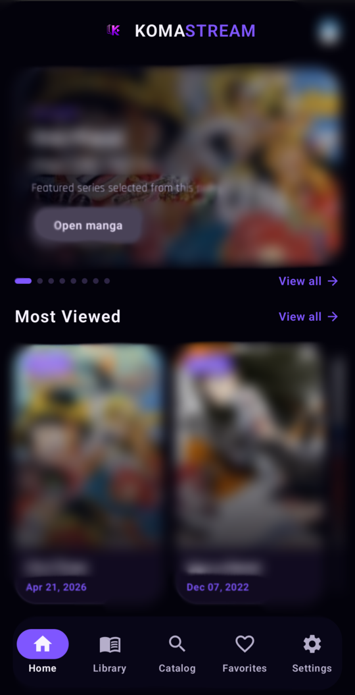
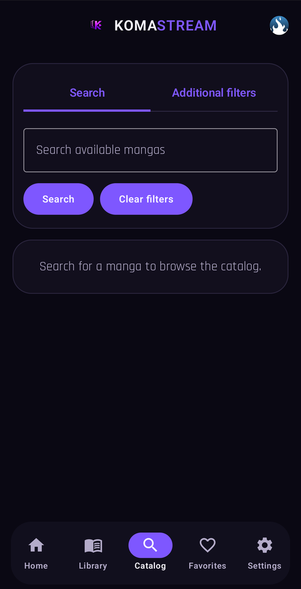
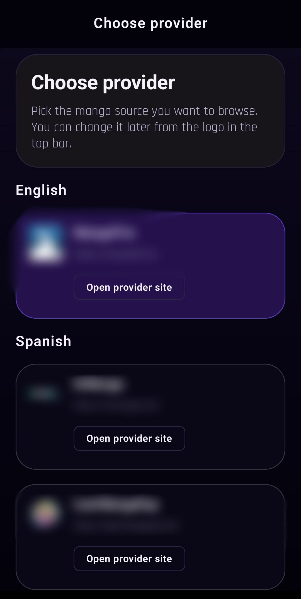
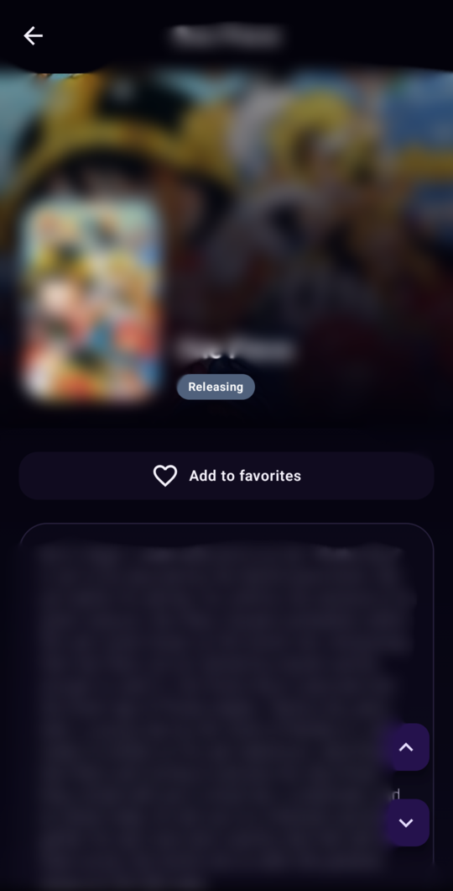
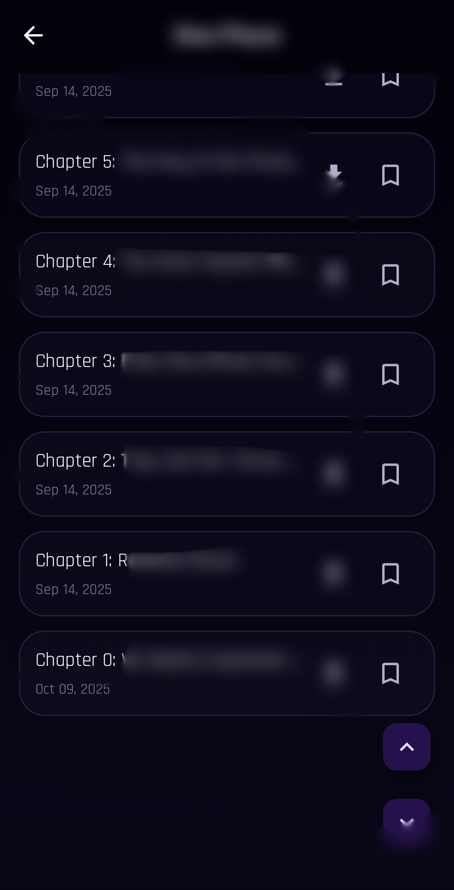
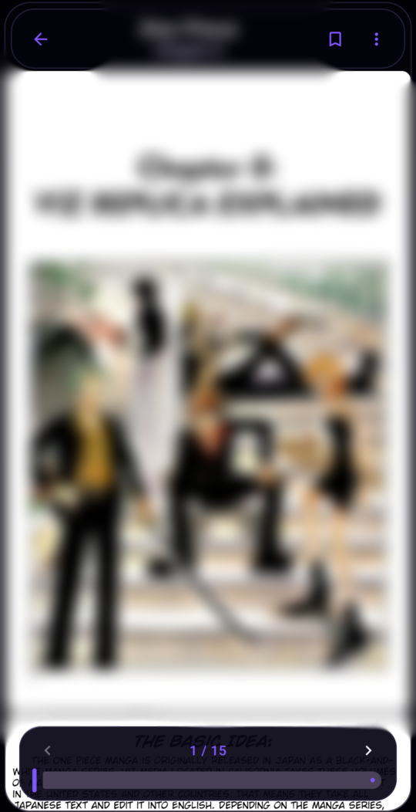

Native Android UI
Jetpack Compose interface with light and dark themes built for quick browsing.
Android manga reader
A clean native client for browsing catalogs, tracking progress, and reading chapters from third-party providers on your device.
KomaStream is built as a client application only. It does not host, mirror, or distribute manga content. Favorites, reading progress, and preferences stay local to the device.
Jetpack Compose interface with light and dark themes built for quick browsing.
Search, filter, and open catalogs from supported third-party providers.
Keep favorites, library entries, and read chapter history on the device.
Export and import backups, and keep downloaded chapters available offline.
English, Spanish, and German localization with provider-aware chapter handling.
Built-in update flow for release builds published on GitHub.





